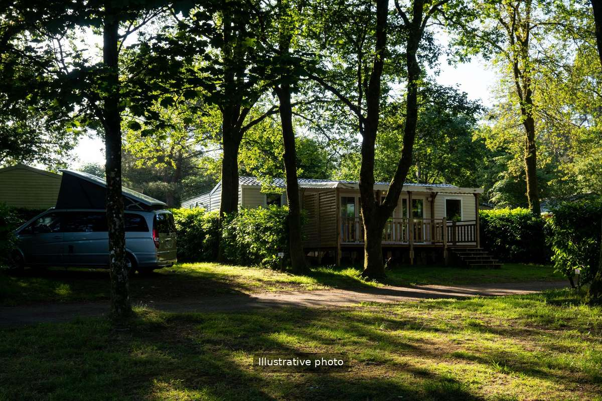
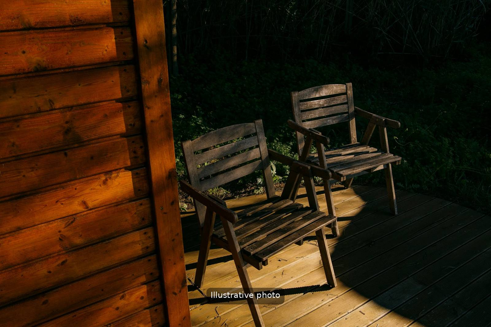

Calme, intimité et la mer toute proche
Le bungalow se trouve dans un quartier résidentiel tranquille de Pula, réputé pour son atmosphère méditerranéenne, ses pins et son eau limpide. Avec sa propre terrasse et son jardin, il évoque davantage une petite maison de vacances qu’un appartement classique.

Emplacement
Les arènes et la vieille ville sont à quelques minutes en voiture. La marina Veruda, l’une des principales marinas du sud de l’Istrie, est toute proche, et l’aéroport de Pula se trouve à environ 10 km, soit une quinzaine de minutes en voiture.
Plages à proximité
Le sud de Pula est réputé pour ses criques rocheuses et ses petites plages nichées parmi les pins. La plage Ambrela et les criques de la presqu’île de Verudela sont à quelques minutes en voiture, avec une eau cristalline et une ombre naturelle.

Confort
- Terrasse privée pour le petit-déjeuner ou l’apéritif
- Petit jardin ombragé
- Parking privé gratuit à côté du logement
- Climatisation
- Wi-Fi haut débit gratuit
Pour qui ?
Couples
Intimité et cadre paisible, loin des grands hôtels animés.
Familles
Espace extérieur, quartier calme et plages familiales à proximité.
Plongeurs
Pula est réputée pour la plongée, et le bungalow est une base pratique.
Plaisanciers
Près de la marina Veruda, idéal si vous naviguez ou louez un bateau.